Table of Contents for
CompTIA Security+ All-in-One Exam Guide, Sixth Edition (Exam SY0-601)), 6th Edition
- Cover (01:09 mins)
- Title Page (01:09 mins)
- Copyright Page (03:27 mins)
- Dedication (01:09 mins)
- About the Authors (04:36 mins)
- Contents (19:33 mins)
- Preface (02:18 mins)
- Acknowledgments (01:09 mins)
- Introduction (12:39 mins)
-
Part I Threats, Attacks, and Vulnerabilities (01:09 mins)
- Chapter 1 Social Engineering Techniques (35:39 mins)
- Chapter 2 Type of Attack Indicators (37:57 mins)
- Chapter 3 Application Attack Indicators (33:21 mins)
- Chapter 4 Network Attack Indicators (39:06 mins)
- Chapter 5 Threat Actors, Vectors, and Intelligence Sources (44:51 mins)
- Chapter 6 Vulnerabilities (31:03 mins)
- Chapter 7 Security Assessments (23:00 mins)
- Chapter 8 Penetration Testing (25:18 mins)
-
Part II Architecture and Design (01:09 mins)
- Chapter 9 Enterprise Security Architecture (26:27 mins)
- Chapter 10 Virtualization and Cloud Security (25:18 mins)
- Chapter 11 Secure Application Development, Deployment, and Automation Concepts (27:36 mins)
- Chapter 12 Authentication and Authorization (33:21 mins)
- Chapter 13 Cybersecurity Resilience (39:06 mins)
- Chapter 14 Embedded and Specialized Systems (41:24 mins)
- Chapter 15 Physical Security Controls (49:27 mins)
- Chapter 16 Cryptographic Concepts (42:33 mins)
-
Part III Implementation (01:09 mins)
- Chapter 17 Secure Protocols (20:42 mins)
- Chapter 18 Host and Application Security (46:00 mins)
- Chapter 19 Secure Network Design (67:51 mins)
- Chapter 20 Wireless Security (25:18 mins)
- Chapter 21 Secure Mobile Solutions (43:42 mins)
- Chapter 22 Implementing Cloud Security (24:09 mins)
- Chapter 23 Identity and Account Management Controls (33:21 mins)
- Chapter 24 Implement Authentication and Authorization (37:57 mins)
- Chapter 25 Public Key Infrastructure (55:12 mins)
- Part IV Operations and Incident Response (01:09 mins)
- Part V Governance, Risk, and Compliance (01:09 mins)
- Part VI Appendixes and Glossary (01:09 mins)
- Glossary (65:33 mins)
- Index (67:51 mins)
CHAPTER 26
Tools/Assess Organizational Security
In this chapter, you will
• Learn to use tools for network reconnaissance and discovery
• Learn to use tools for file manipulation
• Explore shell and script environments
• Learn to use tools for packet capture and replay
• Learn to use tools for forensics
• Explore the world of tools for accomplishing security-related tasks
Competency in performing many security functions involves the use of tools. The number, scope, and details for the tools used in the security industry could fill an entire book, but a basic understanding of a core set of tools is important. This chapter attempts to deliver on this premise and the Security+ objective for tool usage.
Certification Objective This chapter covers CompTIA Security+ exam objective 4.1: Given a scenario, use the appropriate tool to assess organizational security.

EXAM TIP This chapter is filled with hands-on commands that need to be used to be learned. The path to learning these commands is in using them. This is not a read-and-remember chapter, but rather a do-and-learn one. Linux commands can be a bit troublesome for some, so practice is advised. We suggest practicing with the Linux commands described and visiting Linux man pages, which are online refence manuals, for examples of a vast array of Linux commands: https://www.kernel.org/doc/man-pages/.
Network Reconnaissance and Discovery
Networks are like most infrastructure—you never see or care about it until it isn’t working. And when you do want to look, how do you do it? A wide range of tools can be used to permit you to see the inner workings of a network, and they are covered in the sections that follow.
tracert/traceroute
The tracert command is a Windows command for tracing the route that packets take over the network. The tracert command provides a list of the hosts, switches, and routers in the order in which a packet passes through them, providing a trace of the network route from source to target. As tracert uses Internet Control Message Protocol (ICMP), if ICMP is blocked, tracert will fail to provide information. On Linux and macOS systems, the command with similar functionality is traceroute. Figure 26-1 shows using the tracert command to trace the route from a Windows system on a private network to a Google DNS server.
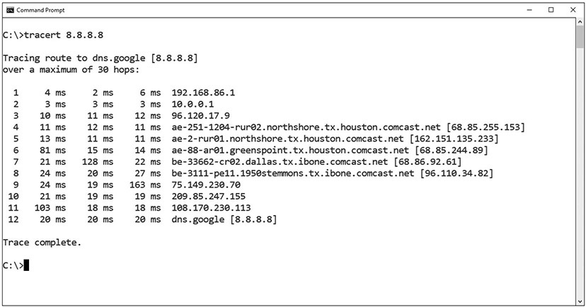
Figure 26-1 tracert example
EXAM TIP The tracert and traceroute commands display the route a packet takes to a destination, recording the number of hops along the way. These are excellent tools to use to see where a packet may get hung up during transmission.
nslookup/dig
The Domain Name System (DNS) is used to convert a human-readable domain name into an IP address. This is not a single system, but rather a hierarchy of DNS servers, from root servers on the backbone of the Internet, to copies at your Internet service provider (ISP), your home router, and your local machine, each in the form of a DNS cache. To examine a DNS query for a specific address, you can use the nslookup command. Figure 26-2 shows a series of DNS queries executed on a Windows machine. In the first request, the DNS server was with an ISP, while on the second request, the DNS server was from a virtual private network (VPN) connection. Between the two requests, the network connections were changed, resulting in different DNS lookups.
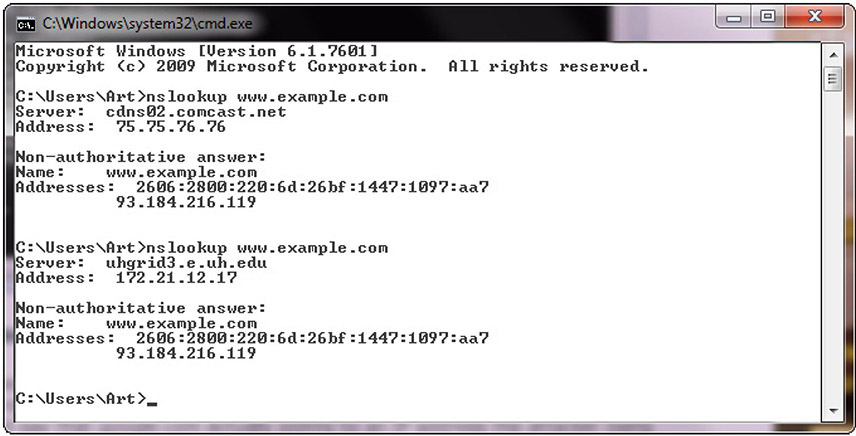
Figure 26-2 nslookup of a DNS query
At times, nslookup will return a nonauthoritative answer, as shown in Figure 26-3. This typically means the result is from a cache as opposed to a server that has an authoritative (that is, known to be current) answer, such as from a DNS server.
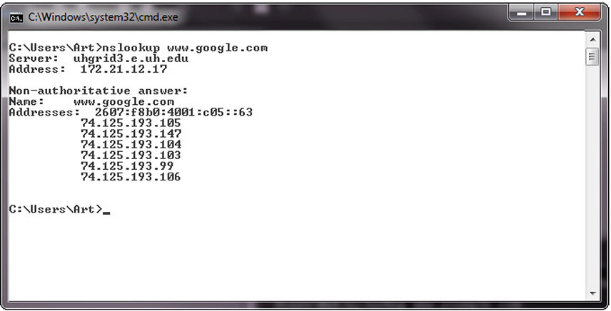
Figure 26-3 Cache response to a DNS query
While nslookup works on Windows systems, the command dig, which stands for Domain Information Groper, works on Linux systems. One difference is that dig is designed to return answers in a format that is easy to parse and include in scripts, which is a common trait of Linux command-line utilities.
ipconfig/ifconfig
Both ipconfig (for Windows) and ifconfig (for Linux) are command-line tools to manipulate the network interfaces on a system. They have the ability to list the interfaces and connection parameters, alter parameters, and release/renew connections. If you are having network connection issues, this is one of the first tools you should use, to verify the network setup of the operating system and its interfaces.
The ip command in Linux is used to show and manipulate routing, devices, policy routing, and tunnels. The ipconfig command is an important command for troubleshooting because it displays current TCP/IP configurations on a local system. The command displays adapter information such as MAC address, current IP addresses (both IPv4 and IPv6), subnet mask, default gateway, as well as DNS servers and whether DHCP is enabled. Figure 26-4 shows some of the information available from ipconfig on a Windows machine. This is an important troubleshooting tool because when you can’t connect to something, it is the first place to start exploring network connections, as it gives you all of your settings.
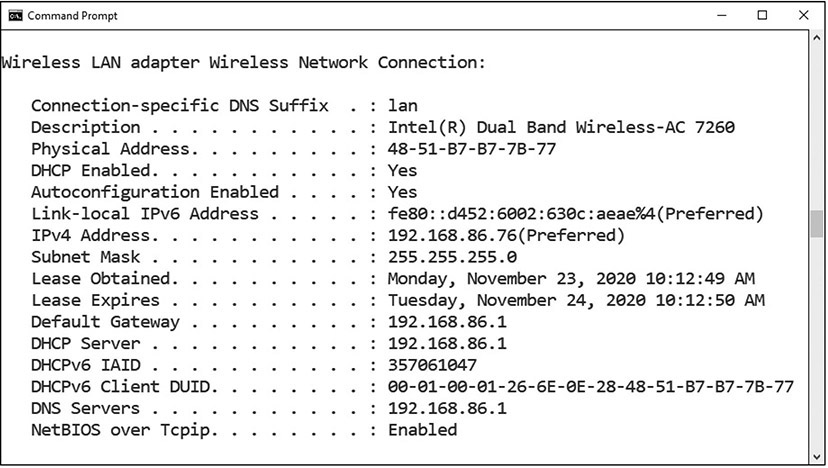
Figure 26-4 ipconfig example
nmap
Nmap is a is free, open source port scanning tool developed by Gordon Lyon and has been the standard network mapping utility for Windows and Linux since 1999. The nmap command is the command to launch and run the nmap utility. Nmap is used to discover what systems are on a network and the open ports and services on those systems. This tool has many other additional functions, such as OS fingerprinting, finding rogue devices, and discovering services and even application versions. It operates via the command line, so it’s very scriptable. It also has a GUI interface called Zenmap. Nmap works on a wide range of operating systems, including Microsoft Windows, Linux, and macOS. This is one of the top ten tools used by system administrators on a regular basis. Nmap includes a scripting engine using the Lua programming language to write, save, and share scripts that can automate different types of scans. All sorts of tasks can be automated, including regular checks for well-known network infrastructure vulnerabilities.
ping/pathping
The ping command sends echo requests to a designated machine to determine if communication is possible. The syntax is ping [options] targetname/address. The options include items such as name resolution, how many pings, data size, TTL counts, and more. Figure 26-5 shows a ping command on a Windows machine.
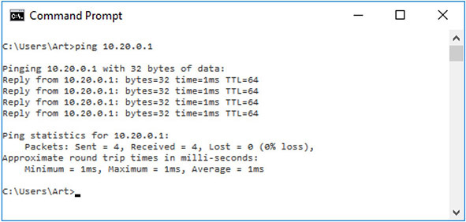
Figure 26-5 ping command
Pathping is a TCP/IP-based utility that provides additional data beyond that of a ping command. Pathping will first display your path results as if you were using tracert or traceroute. Pathping then calculates loss information, as shown in Figure 26-6.
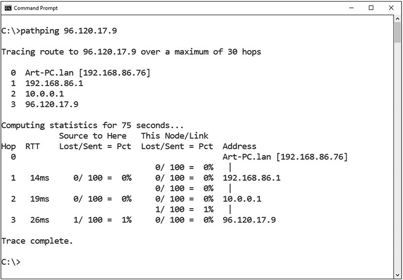
Figure 26-6 Pathping example
EXAM TIP The ping command is used to test connectivity between systems.
hping
Hping is a TCP/IP packet creation tool that allows a user to craft raw IP, TCP, UDP, and ICMP packets from scratch. This tool provides a means of performing a wide range of network operations; anything that you can do with those protocols can be crafted into a packet. This includes port scanning, crafting ICMP packets, host discovery, and more. The current version is hping3, and it is available on most operating systems, including Windows and Linux.
Like all Linux commands, hping can be programmed in Bash scripts to achieve greater functionality. Outputs can also be piped to other commands. Hping also works with an embedded Tcl scripting functionality, which further extends its usefulness for system administrators. Between the range of options and the native scripting capability, hping offers a wide range of functions, including creating password-protected backdoors that are piped to other services. The power comes from the programmability, the options, and the creative work of system administrators.
netstat
The netstat command is used to monitor network connections to and from a system. The following are some examples of how you can use netstat:
• netstat –a Lists all active connections and listening ports
• netstat –at Lists all active TCP connections
• netstat –an Lists all active UDP connections
Many more options are available and useful. The netstat command is available on Windows and Linux, but availability of certain netstat command switches and other netstat command syntax may differ from operating system to operating system.
EXAM TIP The netstat command is useful for viewing all listening ports on a computer and determining which connections are active.
netcat
Netcat is the network utility designed for Linux environments. It has been ported to Windows but is not regularly used in Windows environments. The actual command to invoke netcat is nc –options –address.
The netcat utility is the tool of choice in Linux for reading from and writing to network connections using TCP or UDP. Like all Linux command-line utilities, it is designed for scripts and automation. Netcat has a wide range of functions. It acts as a connection to the network and can act as a transmitter or a receiver, and with redirection it can turn virtually any running process into a server. It can listen on a port and pipe the input it receives to the process identified.
EXAM TIP You should know what each of these tools looks like when being used. If presented with output from one of the tools, you should be able to identify the tool that was used and what action the tool is performing.
IP Scanners
IP scanners do just their name implies: they scan IP networks and can report on the status of IP addresses. There are a wide range of free and commercial scanning tools, and most come with significantly greater functionality than just reporting on address usage. If all you want are addresses, there are a variety of simple command-line network discovery tools that can provide those answers. For instance, if you only want to scan your local LAN, arp – a will do just that. If you want more functionality, you can use the nmap program covered earlier in the chapter. Another solution is Nessus, a commercial offering covered later in the chapter.
arp
The arp command is designed to interface with the operating system’s Address Resolution Protocol (ARP) caches on a system. In moving packets between machines, a device sometimes needs to know where to send a packet using the MAC or layer 2 address. ARP handles this problem through four basic message types:
• ARP request “Who has this IP address?”
• ARP reply “I have that IP address; my MAC address is…”
• Reverse ARP (RARP) request “Who has this MAC address?”
• RARP reply “I have that MAC address; my IP address is…”
These messages are used in conjunction with a device’s ARP table, where a form of short-term memory associated with these data elements resides. The commands are used as a simple form of lookup. When a machine sends an ARP request to the network, the reply is received and entered into all devices that hear the reply. This facilitates efficient address lookups, but also makes the system subject to attack.
The arp command allows a system administrator the ability to see and manipulate the ARP cache on a system. This way they can see if entries have been spoofed or if other problems, such as errors, occur.
route
The route command works in Linux and Windows systems to provide information on current routing parameters and to manipulate these parameters. In addition to listing the current routing table, it has the ability to modify the table. Figure 26-7 shows three examples of route on a Linux system. The first is a simple display of the kernel IP routing table. The second shows a similar result using the ip command. The last is the use of the ip command to get the details of the local table with destination addresses that are assigned to localhost.
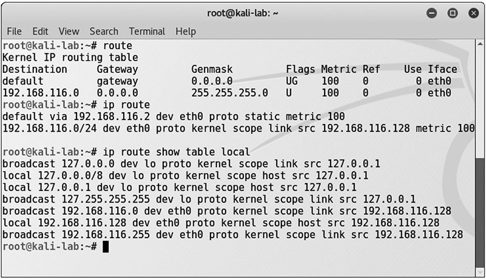
Figure 26-7 The route and ip commands in Linux
curl
Curl is a tool designed to transfer data to or from a server, without user interaction. It support a long list of protocols (DICT, FILE, FTP, FTPS, Gopher, HTTP, HTTPS, IMAP, IMAPS, LDAP, LDAPS, MQTT, POP3, POP3S, RTMP, RTMPS, RTSP, SCP, SFTP, SMB, SMBS, SMTP, SMTPS, Telnet, and TFTP) and acts like a Swiss army knife for interacting with a server. Originally designed to interact with URLs, curl has expanded into a jack-of-all-trades supporting numerous protocols. It works on both Linux and Windows systems, although the command options are slightly different.
Here’s a simple example of using curl to simulate a GET request for a website URL:
curl https://www.example.com
theHarvester
theHarvester is a Python-based program designed to assist penetration testers in the gathering of information during the reconnaissance portion of a penetration test. This is a useful tool for exploring what is publicly available about your organization on the Web, and it can provide information on employees, e-mails, and subdomains using different public sources such as search engines, PGP key servers, and Shodan databases. Designed for Linux and included as part of Kali and other penetration testing distributions, theHarvester is shown in Figure 26-8 searching for the first 500 e-mails from the domain kali.org using Google.
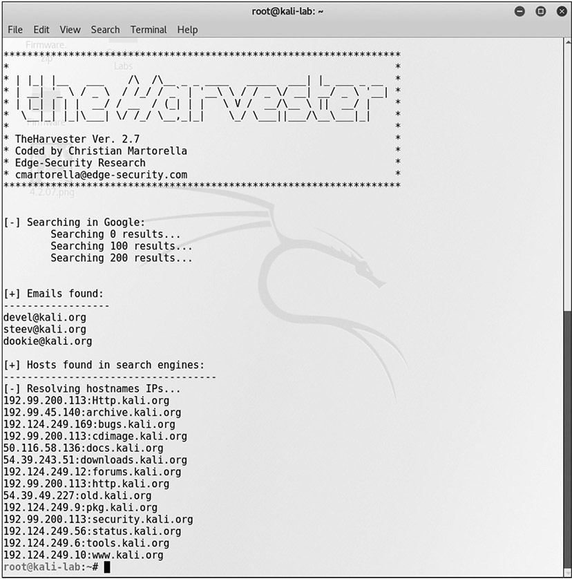
Figure 26-8 theHarvester
sn1per
Sn1per is a Linux-based tool used by penetration testers. Sn1per is an automated scanner designed to collect a large amount of information while scanning for vulnerabilities. It runs a series of automated scripts to enumerate servers, open ports, and vulnerabilities, and it’s designed to integrate with the penetration testing tool Metasploit. Sn1per goes further than just scanning; it can also brute force open ports, brute force subdomains and DNS systems, scan web applications for common vulnerabilities, and run targeted nmap scripts against open ports as well as targeted Metasploit scans and exploit modules. This tool suite comes as a free community edition, with limited scope, as well as an unlimited professional version for corporations and penetration testers.
scanless
Scanless is a command-line utility to interface with websites that can perform port scans as part of a penetration test. When you use this tool, the source IP address for the scan is the website, not your testing machine. Written in Python, with a simple interface, scanless anonymizes your port scans.
dnsenum
Dnsenum is a Perl script designed to enumerate DNS information. Dnsenum will enumerate DNS entries, including subdomains, MX records, and IP addresses. It can interface with Whois, a public record that identifies domain owners, to gather additional information. Dnsenum works on Linux distros that support Perl.
EXAM TIP DNS enumeration can be used to collect information such as user names and IP addresses of targeted systems.
Nessus
Nessus is one of the leading vulnerability scanners in the marketplace. It comes in a free version, with limited IP address capability, and fully functional commercial versions. Nessus is designed to perform a wide range of testing on a system, including the use of user credentials, patch level testing, common misconfigurations, password attacks, and more. Designed as a full suite of vulnerability and configuration testing tools, Nessus is commonly used to audit systems for compliance to various security standards such as PCI DSS, SOX, and other compliance schemes. Nessus free version was the original source of the OpenVAS fork, which is a popular free vulnerability scanner.
Cuckoo
Cuckoo is a sandbox used for malware analysis. Cuckoo is designed to allow a means of testing a suspicious file and determining what it does. It is open source, free software that can run on Linux and Windows. Cuckoo is a common security tool used to investigate suspicious files, as it can provide reports on system calls, API calls, network analysis, and memory analysis.
EXAM TIP The Security+ exam will test your knowledge of the network reconnaissance and discovery tools previously detailed. Practice with each of them and, given a scenario, be able to identify and use the appropriate tool!
File Manipulation
In computer systems, most information can be represented as a file. Files are files, as are directories and even entire storage systems. The concept of a file is the basic interface to information. Because of this, file manipulation tools have the ability to manage a lot of tasks. As many operations are scripted, the ability to manipulate a file, returning specific elements or records, has great utility. This next section looks at a bunch of tools used to manipulate files in Linux systems.
head
Head is a utility designed to return the first lines of a file. A common option is the number of lines one wishes to return. For example, head -5 returns the first five lines of a file.
tail
Tail is a utility designed to return the last lines of a file. A common option is the number of lines one wishes to return. For example, tail -5 returns the last five lines of a file.
cat
Cat is a Linux command, short for concatenate, that can be used to create and manipulate files. It can display the contents of a file, handle multiple files, and can be used to input data from stdin, which is a stream of input, to a file if the file does not exist. Here is an example:
# cat textfile.txt
The cat command can be piped through more or less to limit scrolling of long files:
# cat textfile.txt | more
If you need line numbers in the output, you can add the -n option. The output can be piped through various other Linux commands, providing significant manipulation capability. For instance, you can combine four files and sort the output into a fifth file, like so:
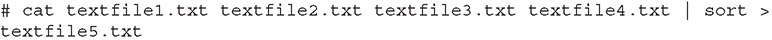
grep
Grep is a Linux utility that can perform pattern-matching searches on file contents. The name grep comes from “Globally search for Regular Expression and Print the matching lines.” Grep dates back to the beginning of the Unix OS and was written by Ken Thompson. Today, the uses of grep are many. It can count the number of matches, and it can find lines with matching expressions, either case sensitive or case insensitive. It can use anchors (matching based on beginning or ending of a word), wildcards, and negative searches (finding lines that do not contain a specified element), and it works with other tools through the redirection of inputs and outputs.
Grep has many options, including the use of regular expressions to perform matching. Here’s a sampling of the more common options:
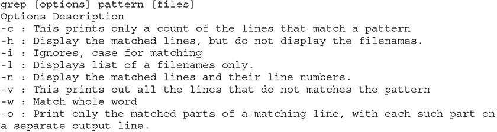
There are many other options, including the display of lines before and after matches. To get a full feel of the breadth of options, consult the man page for grep.
chmod
Chmod is the Linux command used to change access permissions of a file. The general form of the command is
chmod <options> <permissions> <filename>
Permissions can be entered either in symbols or octal numbers. Let’s assume we want to set the following permissions: The user can read, write, and execute the file. Members of the group can read and execute it, and all others may only read it. In this case, we can use either of the following two commands, which are identical in function:
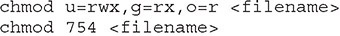
The octal notation works as follows: 4 stands for “read,” 2 stands for “write,” 1 stands for “execute,” and 0 stands for “no permission.” Thus, for the user, 7 is the combination of permissions 4+2+1 (read, write, and execute). For the group, 5 is 4+0+1 (read, no write, and execute), and for all others, 4 is 4+0+0 (read, no write, and no execute).
logger
The Linux command logger is how you can add log file information to /var/log/syslog. The logger command works from the command line, from scripts, or from other files, thus providing a versatile means of making log entries. The syntax is simple:
logger <message to put in the log>
This command will put the text in the option into the syslog file.
EXAM TIP Know the purpose of the Linux file manipulation commands. Given a scenario, be prepared to implement the appropriate command.
Shell and Script Environments
One of the more powerful aspects of the Linux environment is the ability to create shell scripts. By combining a series of functions, and through the use of redirecting inputs and outputs, one can do significant data manipulation. Take a PCAP file for instance. Let’s assume you need to extract specific data elements. You want only ping (echo) replies to a specific IP address. And for those records, you only want one byte in the data section. Using a series of commands in a shell script, you can create a dissector that takes the PCAP, reads it with tcpdump, extracts the fields, and then writes the desired elements to a file. You could do this with Python as well, and with some tools, you can get partway there. Bottom line: there is a lot you can do using the OS shell and scripts.
SSH
SSH (Secure Shell) is a cryptographically secured means of communicating and managing a network over an unsecured connection. It was originally designed as a replacement for the plaintext protocols of Telnet and other tools. When remotely accessing a system, it is important not to use a plaintext communication channel, as that would expose information such as passwords and other sensitive items to interception.
EXAM TIP SSH is a cryptographically secured means of communicating and managing a network. SSH uses port 22 and is the secure replacement for Telnet.
PowerShell
PowerShell is a Microsoft Windows-based task automation and configuration management framework, consisting of a command-line shell and scripting language. PowerShell is built on top of the .NET Common Language Runtime (CLR) and accepts and returns .NET objects. The commands used in PowerShell are called cmdlets, and they can be combined to process complex tasks. PowerShell can be run from a PowerShell Console prompt, or through the Windows PowerShell Integrated Scripting Environment (ISE), which is a host application for Windows PowerShell. The following example finds all executables within the Program Files folder that were last modified after October 1, 2005, and that are neither smaller than 1MB nor larger than 10MB:
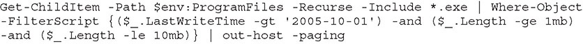
Because the Microsoft Windows object model is included, as well as numerous cmdlets designed to perform specific data access operations, PowerShell is an extremely powerful tool for managing Windows systems in an enterprise. With its latest release, PowerShell has been modified to run on multiple platforms, including Windows, macOS, and Linux.
EXAM TIP PowerShell is a powerful command-line scripting interface. PowerShell files use the .ps1 file extension.
Python
Python is a computer language commonly used for scripting and data analysis tasks facing system administrators and security personnel. Python is a full-fledged computer language. It supports objects, functional programming, and garbage collection, and most importantly has a very large range of libraries that can be used to bring functionality to a program. The downside is that it is interpreted, so speed is not a strong attribute. However, usability is high, and coupled with the library support, Python is a must-learn language for most security professionals.
EXAM TIP Python is a general-purpose computer programming language that uses the file extension .py.
OpenSSL
OpenSSL is a general-purpose cryptography library that offers a wide range of cryptographic functions on Windows and Linux systems. Designed to be a full-featured toolkit for the Transport Layer Security (TLS) and Secure Sockets Layer (SSL) protocols, it provides so much more for real-world daily challenges. OpenSSL can perform the following tasks in either scripts or programs, offering access to cryptographic functions without having to develop the code:
• Work with RSA and ECDSA keys
• Create certificate signing requests (CSRs)
• Verify CSRs
• Create certificates
• Generate self-signed certificates
• Convert between encoding formats (PEM, DER) and container formats (PKCS12, PKCS7)
• Check certificate revocation status
• And more
One can view OpenSSL as a Swiss army knife for all things involving cryptography functions.
Packet Capture and Replay
Computers communicate and exchange data via network connections by way of packets. Software tools that enable the capturing, editing, and replaying of the packet streams can be very useful for a security professional. Whether you’re testing a system or diagnosing a problem, having the ability to observe exactly what is flowing between machines and being able to edit the flows is of great utility. The tools in this section provide this capability. They can operate either on live network traffic or recorded traffic in the form of packet capture (PCAP) files.
Tcpreplay
Tcpreplay is the name for both a tool and a suite of tools. As a suite, tcpreplay is a group of free, open source utilities for editing and replaying previously captured network traffic. As a tool, it specifically replays a PCAP file on a network. Originally designed as an incident response tool, tcpreplay has utility in a wide range of circumstances where network packets are used. It can be used to test all manner of security systems through the use of crafted PCAP files to trip certain controls. It is also used to test online services such as web servers. If you have a need to send network packets to another machine, tcpreplay suite has your answer.
Tcpdump
The tcpdump utility is designed to analyze network packets either from a network connection or a recorded file. You also can use tcpdump to create files of packet captures, called PCAP files, and perform filtering between input and output, making it a valuable tool to lessen data loads on other tools. For example, if you have a complete packet capture file that has hundreds of millions of records, but you are only interested in one server’s connections, you can make a copy of the PCAP file containing only the packets associated with the server of interest. This file will be smaller and easier to analyze with other tools.
Wireshark
Wireshark is the gold standard for graphical analysis of network protocols. With dissectors that allow the analysis of virtually any network protocol, this tool can allow you to examine individual packets, monitor conversations, carve out files, and more. When it comes to examining packets, Wireshark is the tool. When it comes to using this functionality in a scripting environment, TShark provides the same processing in a scriptable form, producing a wide range of outputs, depending on the options set. Wireshark has the ability to capture live traffic, or it can use recorded packets from other sources.
EXAM TIP When you’re examining packets, the differentiator is what do you need to do. Wireshark allows easy exploration. Tcpdump captures packets into PCAP files, and tcpreplay has a suite of editing tools.
Forensics
Digital forensics is the use of specific methods to determine who did what on a system at a specific time, or some variant of this question. Computers have a wide range of artifacts that can be analyzed to make these determinations. There are tools to collect these artifacts, and tools used to analyze the data collected. In this section, we examine some of the primary tools used in these efforts. Digital forensic processes and procedures are covered in detail in Chapter 30, “Digital Forensics.” This is just an examination of some of the tools used.
dd
Data dump (dd) is a Linux command-line utility used to convert and copy files. On Linux systems, virtually everything is represented in storage as a file, and dd can read and/or write from/to these files, provided that function is implemented in the respective drivers. As a result, dd can be used for tasks such as backing up the boot sector of a hard drive, obtaining a fixed amount of random data, or copying (backing up) entire disks. The dd program can also perform conversions on the data as it is copied, including byte order swapping and conversion to and from the ASCII and EBCDIC text encodings. dd has the ability to copy everything, back up/restore a partition, and create/restore an image of an entire disk. Some common examples follow.
Here’s how to back up an entire hard disk:
# dd if = /dev/sda of = /dev/sdb
Here, if represents input file and of represents output file. Therefore, the exact copy of /dev/sda will be available in /dev/sdb. If there are any errors, the preceding command will fail. If you give the parameter conv=noerror, it will continue to copy if there are read errors. Note that input file and output file should be checked very carefully because mistakes can overwrite data, causing you to lose all your data.
Here’s how to create an image of a hard disk:
# dd if = /dev/hda of = ~/hdadisk.img
When doing a forensics data capture, rather than taking a backup of the hard disk, you should create an image file of the hard disk and save it on another storage device. There are many advantages to backing up your data to a disk image, one being the ease of use. Image files contain all the information on the associated source, including unused and previously used space.
memdump
Linux has a utility program called memory dumper, or memdump. This program dumps system memory to the standard output stream, skipping over any holes in memory maps. By default, the program dumps the contents of physical memory (/dev/mem). The output from memdump is in the form of a raw dump. Because running memdump uses memory, it is important to send the output to a location that is off the host machine being copied, using a tool such as netcat.
WinHex
WinHex is a hexadecimal file editor. This tool is very useful in forensically investigating files, and it provides a whole host of forensic functions such as the ability to read almost any file, display contents of the file, convert between character sets and encoding, perform hash verification functions, and compare files. As a native file reader/hex editor, it can examine specific application files without invoking the application and changing the data. WinHex is a commercial program that is part of the X-Ways forensic suite, which is a comprehensive set of digital forensic tools.
FTK Imager
FTK Imager is the company AccessData’s answer to dd. FTK Imager is a commercial program, free for use, and is designed to capture an image of a hard drive (or other device) in a forensic fashion. Forensic duplications are bit-by-bit copies, supported by hashes to demonstrate that the copy and the original are exact duplicates in all ways. As with all forensically sound collection tools, FTK Imager retains the file system metadata (and the file path) and creates a log of the files copied. This process does not change file access attributes. FTK Imager is part of the larger, and commercial, FTK suite of forensic tools.
Autopsy
Autopsy is the open source answer for digital forensic tool suites. This suite, developed by Brian Carrier, has evolved over the past couple of decades into a community-supported open source project that can perform virtually all digital forensic functions. It runs on Windows and offers a comprehensive set of tools that can enable network-based collaboration and automated, intuitive workflows. It has tools to support hard drives, removable devices, and smartphones. It supports MD5 hash creation and lookup, deleted file carving, EXIF data extraction from JPEG images, indexed keyword searches, extension mismatch detections, e-mail message extractions, and artifact extractions from web browsers.
It has case management tools to support the functions of case analysis and reporting, including managing timelines.
EXAM TIP Be able to identify the various digital forensics tools discussed and know the purpose of each. For example, know that dd is a Linux command-line utility used to convert and copy files, whereas FTK Imager is a commercial program designed to capture an image of a hard drive (or other device) in a forensic fashion.
Exploitation Frameworks
Exploitation frameworks are toolsets designed to assist hackers in the tasks associated with exploiting vulnerabilities in a system. These frameworks are important because the exploitation path typically involves multiple steps, all done in precise order on a system to gain meaningful effect. The most commonly used framework is Metasploit, a set of “tools” designed to assist a penetration tester in carrying out the steps needed to exploit a vulnerability on a system. These frameworks can be used by security personnel as well, specifically to test the exploitability of a system based on existing vulnerabilities and employed security controls.
Password Crackers
Password crackers are used by hackers to find weak passwords. Why would a system administrator use one? Same reason. Running your system’s password lists through a password cracker provides two things: an early warning of a crackable password, and peace of mind that your passwords are safe when you can’t crack any in a reasonable period of time.
Password crackers work using dictionary lists and brute force. On the dictionary lists, they make passwords by combining words with each other, with numbers and special symbols, and test those against the system. They also can perform brute force attacks. Password crackers can work online against a live system, but then they can be subject to timeouts after a limited number of false entries. However, if they can steal the password file, they can operate at maximum speed until a match is found. On a modern Core i9 machine with a GPU, ten-character passwords will fall in roughly a week of work. With the use of multiple GPUs through a cloud vendor, this can fall to hours.
Data Sanitization
Data sanitization tools are tools used to destroy, purge, or otherwise identify for destruction specific types of data on systems. Before a system can be retired and disposed of, you need to sanitize the data needs. There are several approaches, the first being the whole disk approach. You can use a data sanitization tool to erase or wipe the entire storage of the system, making the data no longer recoverable. One method of doing this is to use self-encrypting disks, and the destruction of the key leaves the disk unrecoverable. A second, more targeted approach is to identify the sensitive data and deal with it specifically. Tools such as Identity Finder excel at this aspect of data sanitization. As with all tools, it is not the tool that provides the true value but rather the processes and procedures that ensure the work is done, and done correctly when required.
Chapter Review
In this chapter, you became acquainted with the tools used in security. The chapter began with a section on network reconnaissance and discovery. In this section, the tools tracert/traceroute, nslookup/dig, ipconfig/ifconfig, nmap, ping/pathping, hping, netstat, netcat, IP scanners, arp, route, curl, theHarvester, sn1per, scanless, dnsenum, Nessus, and Cuckoo were covered.
The next section covered tools used in file manipulation. In this section, the tools covered were head, tail, cat, grep, chmod, and logger. The next section was on shell and script environments. Here, SSH, PowerShell, Python, and OpenSSL were covered. The next section covered packet capture and replay, and the tools tcpreplay, tcpdump, and Wireshark were covered.
Digital forensic tools were covered in the next major section. Here, dd, memdump, WinHex, FTK Imager, and Autopsy were presented. The chapter concluded with an examination of exploitation frameworks, password crackers, and data sanitization tools.
Questions
To help you prepare further for the CompTIA Security+ exam, and to test your level of preparedness, answer the following questions and then check your answers against the correct answers at the end of the chapter.
1. To secure communications during remote access of a system, one can use which of the following tools?
A. OpenSSL
B. SSH
C. dd
D. tcpdump
2. Which of the following is not a packet capture/analysis tool?
A. Wireshark
B. tcpreplay
C. tcpdump
D. dd
3. To capture an image of the memory in a running system, one can use which of the following?
A. grep
B. dumpmem
C. memdump
D. logger
4. Which tools are used in IP address investigations? (Choose all that apply.)
A. tracert
B. theHarvester
C. dnsenum
D. chmod
5. To search through a system to find files containing a phrase, what would the best tool be?
A. curl
B. logger
C. chmod
D. grep
6. What does chmod do?
A. Sets permission on a file
B. Initiates a change modification entry in a log file
C. Cryptographically hashes a file
D. Lists the files in a working directory
7. You need to analyze previously collected packet data on a network, including editing some of the data. Which is the best tool to use?
A. tcpreplay
B. tcpdump
C. netstat
D. Wireshark
8. Which of these tools is used in penetration testing? (Choose all that apply.)
A. nmap
B. Nessus
C. scanless
D. theHarvester
9. To automate system administration across an enterprise Windows network, including using Windows objects, the best choice would be which of the following?
A. Bash scripting
B. Python
C. Wireshark
D. PowerShell
10. You think a file is malware. What is the first tool you should invoke?
A. Cuckoo
B. WinHex
C. OpenSSL
D. Autopsy
Answers
1. B. SSH encrypts the communication channel across the path its packets take.
2. D. The dd utility captures files from file systems, not packets on a network.
3. C. Memdump is a program used to copy what is currently in memory.
4. A and C. Tracert gives the IP addresses of a communication channel, and dnsenum gets information from a DNS server.
5. D. Grep is the pattern-matching tool that can be used to match patterns and search for matches.
6. A. Chmod is used to set/manage file permissions in a Linux environment.
7. A. Tcpreplay is the best tool to use in this case because the question requested packet editing.
8. A, B, C, and D. All of these tools are used in penetration testing. Nmap finds systems, Nessus scans for vulnerabilities, scanless hides the IP of the machine scanning, and theHarvester collects information on potential targets.
9. D. PowerShell is the best tool to use in this case. The key is the inclusion of Windows objects.
10. A. Cuckoo is a sandbox program designed to analyze malicious software, separating the software from direct connection to the OS.